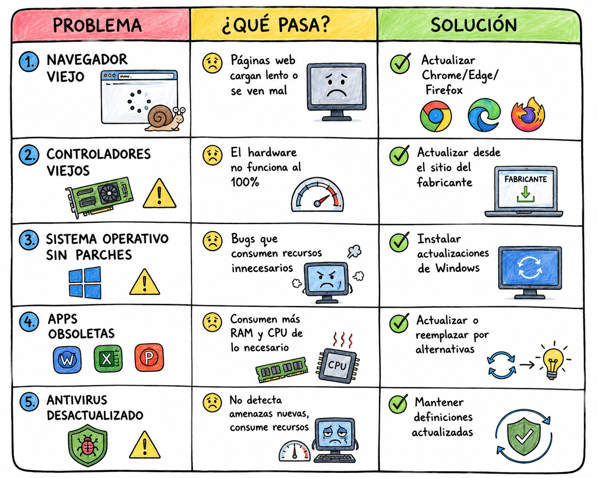
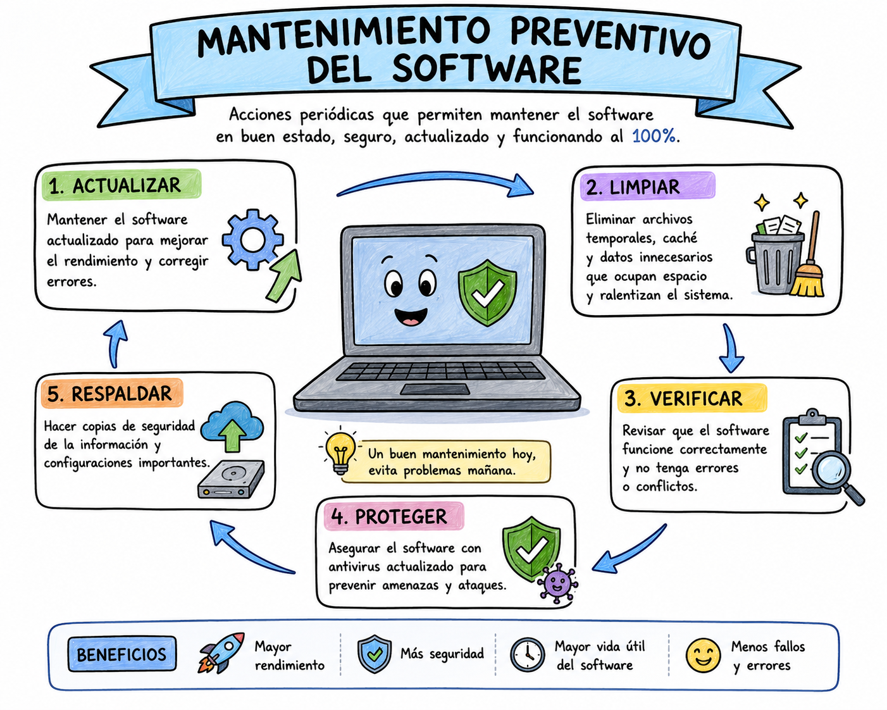

ARTÍCULO TÉCNICO
Actualizaciones críticas y seguridad del sistema

Introducción
Mantenimiento de software: actualizaciones críticas, seguridad del sistema operativo y prevención de cuellos de botella.
Actualizaciones Críticas de Seguridad
¿Qué son las actualizaciones de seguridad? Son parches o correcciones que los fabricantes lanzan para arreglar fallos o agujeros de seguridad que descubren en el sistema operativo.
¿Por qué debo actualizar mi computadora? Mucha gente piensa que mantener el software actualizado es solo para que aparezcan cosas nuevas o para que el sistema se vea más bonito. Pero la verdad es que las actualizaciones son súper importantes para la seguridad y el rendimiento de tu computadora. Además, cuando el software no está bien cuidado, empiezan a aparecer los cuellos de botella: esos problemas que hacen que todo vaya lento aunque el hardware sea bueno.
Tipos de actualizaciones
| Tipo de actualización | ¿Qué hace? |
|---|---|
| Actualizaciones de seguridad | Arreglan vulnerabilidades que hackers pueden explotar |
| Actualizaciones de funciones | Agregan nuevas características al sistema |
| Actualizaciones de controladores | Mejoran el funcionamiento de hardware |
| Actualizaciones de apps | Corrigen errores y mejoran rendimiento |

Cómo Configurar las Actualizaciones Correctamente
En Windows 11/10: Ve a Configuración → Windows Update → Opciones avanzadas:
| Configuración | Razón |
|---|---|
| Recibir actualizaciones de otros productos de Microsoft | Actualiza Office y otras apps |
| Descargar actualizaciones a través de conexiones limitadas | Ahorra datos si usas internet móvil |
| Notificarme cuando sea necesario reiniciar | Te avisa y no se reinicia solo |
| Programar el reinicio | Que reinicie cuando no la estés utilizando |

Prevención de Cuellos de Botella
¿Qué es un cuello de botella? Un cuello de botella es cuando uno de los componentes del computador es mucho más lento que los demás. Ese componente “lento” limita el rendimiento de todos los equipos, aunque las otras piezas sean muy potentes.
Los cuellos de botella más comunes son:
| Cuello de botella | Síntomas | Causas |
|---|---|---|
| RAM insuficiente | Todo se traba al abrir varios programas | Tener solo 4 GB |
| Disco duro HDD lento | La laptop tarda minutos en encender | No tener un SSD |
| Procesador viejo | Programas modernos no corren bien | CPU de hace 8+ años |
| Software desactualizado | Apps lentas, incompatibilidades, bugs | No actualizar desde hace meses |
| Muchos programas al inicio | Tarda una eternidad en encender | Apps que se abren solas |
| Archivos temporales acumulados | El disco se llena y todo va lento | No limpiar nunca |
Por eso, mantener el software limpio y actualizado es el primer paso vital en el Mantenimiento Preventivo del Software para evitar que estos cuellos de botella ocurran.